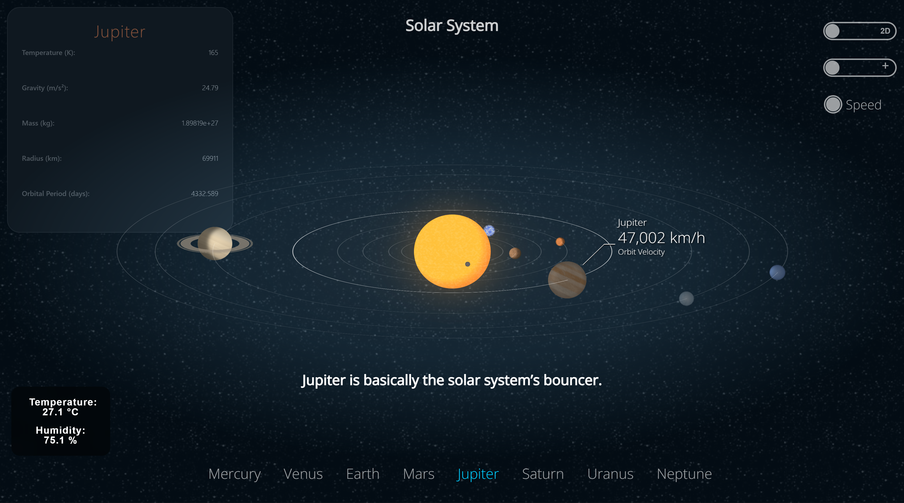

🚌 NxtStop
A rural bus tracking web app to help daily commuters access private buses in real time.
Project Overview: NxtStop is designed to improve rural transportation by tracking private buses, showing arrival times, and providing route info. It’s a lightweight solution using HTML, CSS, and JavaScript.
Features:
- Live bus location preview
- Searchable bus routes
- Lightweight UI for rural users

🌌 Interactive Solar System
An interactive Solar System that shows planet facts and random fun facts, with an ESP32 and DHT11 sensor to auto-cycle planets based on environmental data.
Project Overview: An interactive Solar System that shows planet facts and random fun facts, with an ESP32 and DHT11 sensor to auto-cycle planets based on environmental data.
Features:
- Interactive Planet Facts – Click on any planet to view detailed facts and a random fun fact.
- Auto Planet Selection – ESP32 with DHT11 sensor cycles planets automatically using temperature and humidity data.
- Engaging Learning Experience – Combines astronomy with IoT for an educational and fun interface.


📊 Push-Up Tracker
A basic personal fitness tracker built to log push-ups and visualize progress over time.